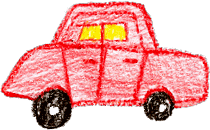

Palindrome City - Department of Motor Vehicles

PALINDROME CITY
DEPARTMENT OF MOTOR VEHICLES
VEHICLE PALINDROMES
(SPELLED BACKWARDS):
1. racecar
2. A Toyota
3. I was sad - no Hondas saw I.
4. Yes, Syd, Owen saved Eva's new Odyssey.
5. A Toyota - race fast, safe car - a Toyota.
6. A Toyota's a Toyota.
7. He won a Toyota now, eh?
8. Was it a car or a cat I saw?
9. Anne, I vote more cars race Rome to Vienna.
10. "No cab, eh, Ted?" I sat up. I put aside the bacon.
11. Sat in a taxi; left Felix at Anita's.
Return to Home
Copyright © 2007 Palindrome City